Personal Projects
Senior Capstone - Advancing Computational Exploration into the Photochemistry of Vision - Kenyon College (PDF)
When light hits 11-cis-retinal (PSB11), the molecule becomes excited and isomerizes into the all-trans-retinal (PSBT), influenced by both electrostatic and steric effects. The photoisomerization reaction dynamics have been increasingly investigated with computational models like CASSCF, CASPT2, QM/MM, AMBER, and many more. This review examines methods proposed by recent computational and experimental investigations of opsin proteins that explore steric and electrostatic manipulations of RPSB and the binding pocket for advanced QM/MM simulations.
MERN Encrypted Messaging Application
Built an ecrpyted messaging application using the MERN (MongoDB, Express, React, Node.js) stack. Messages are encryped with AES256 before stored in the MongoDB, insuring user privacy.
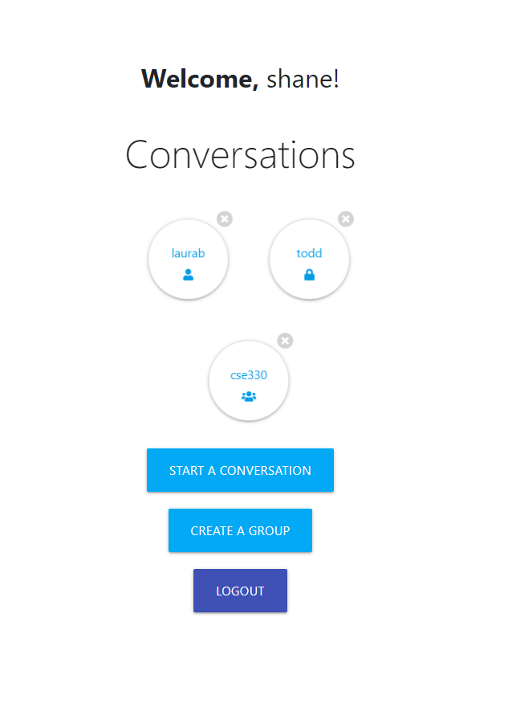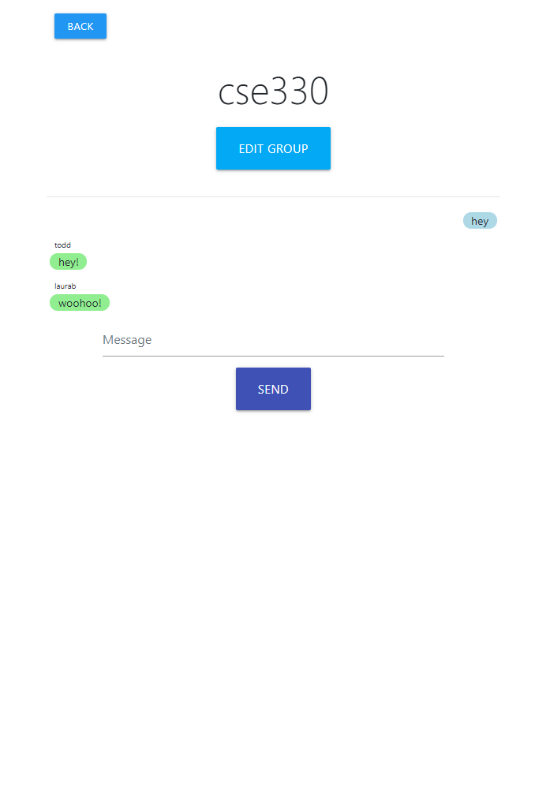
Computational Chemistry Research - Dr. John Payton PhD
Investigated novel computational research into light-activated biomolecular systems with Visiting Professor Dr. John Payton Ph.D. During this research, I used quantum chemistry software packages like Avogadro, Gaussian, and OpenMolcas, and wrote Python scripts to organize my virtual working environment and rapidly submit calculations to the cloud.
Social Media Application
Built the front and back-end of a social media application that can store user information within SQL databases and use PHP to dynamically generate content.
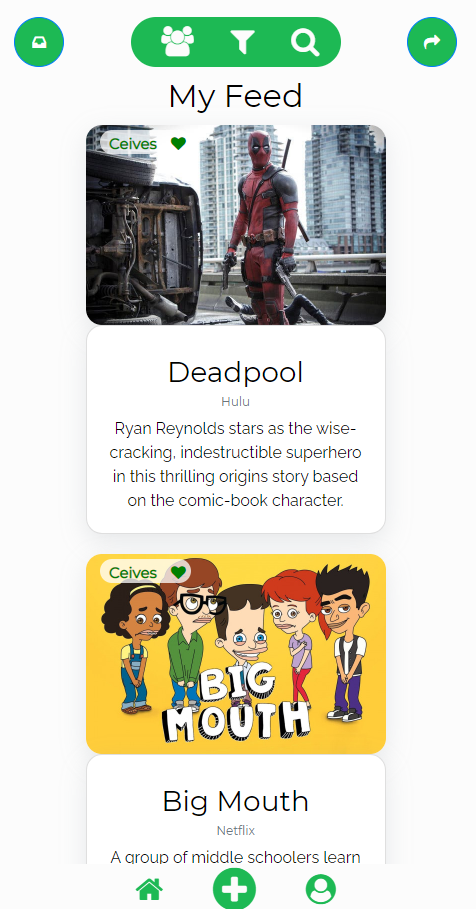
Mount Vernon Archival Database (MVAD)
For a community outreach project, our team constructed an archival database to access old records that cannot be transferred to a new system and managed weekly meetings with clients.
CongressAPI
An application built on Flask and Django that visualizes funding information for congressional candidates running for re-election in the next term. Congress member data is collected using ProPublica and OpenSecrets APIs.
 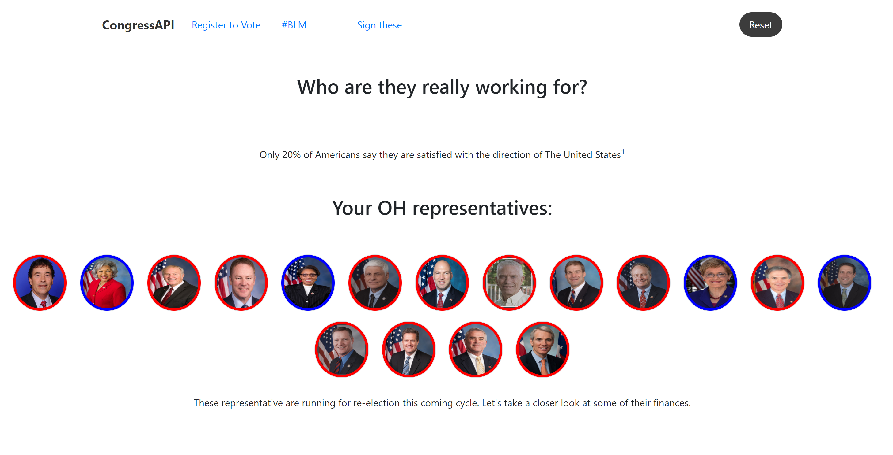
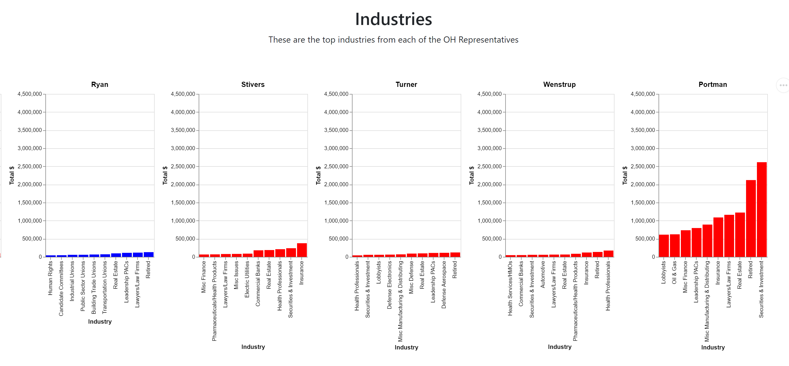
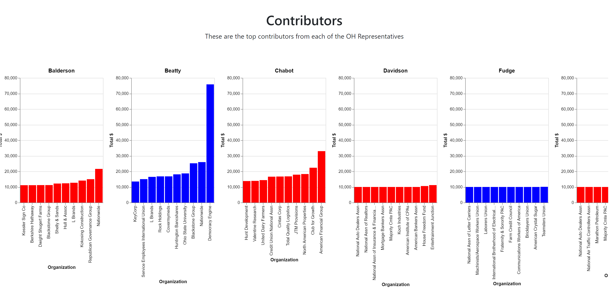
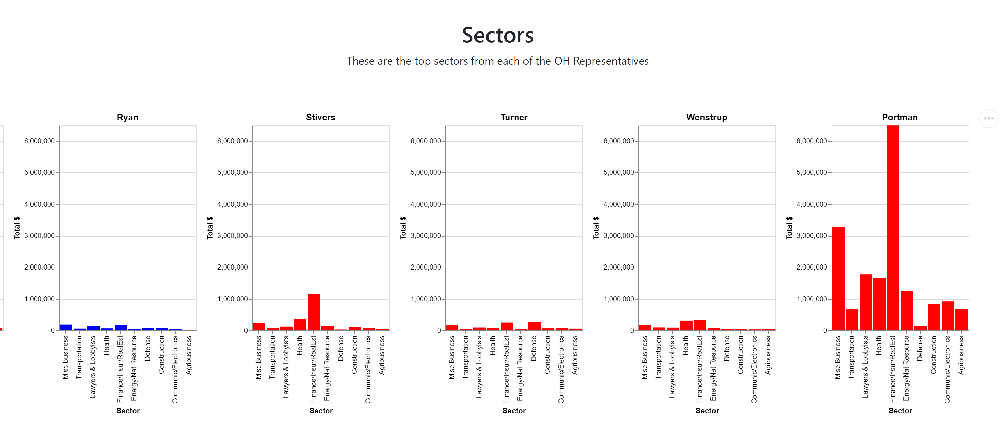
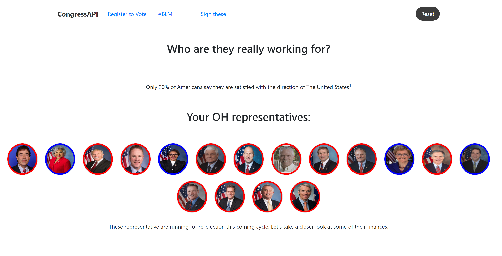
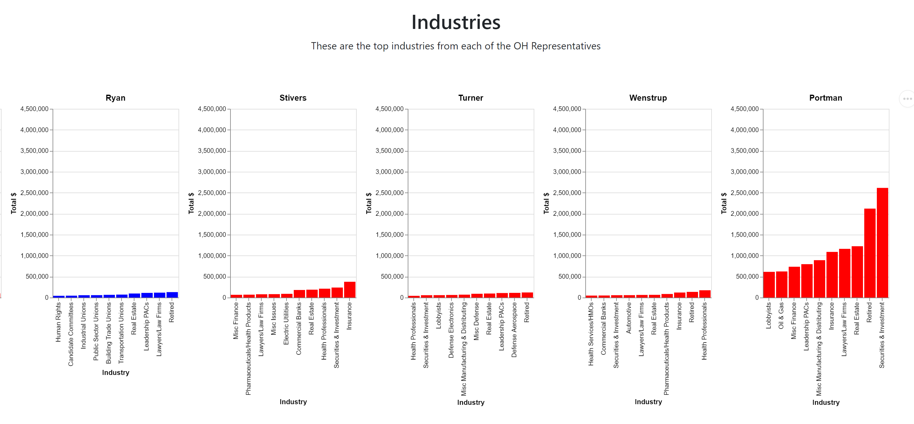
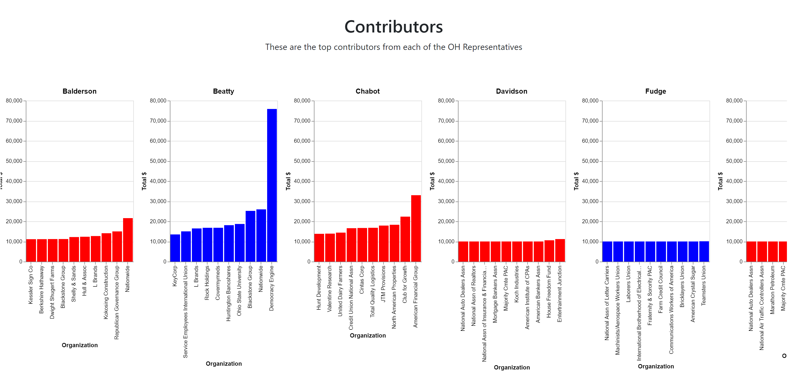
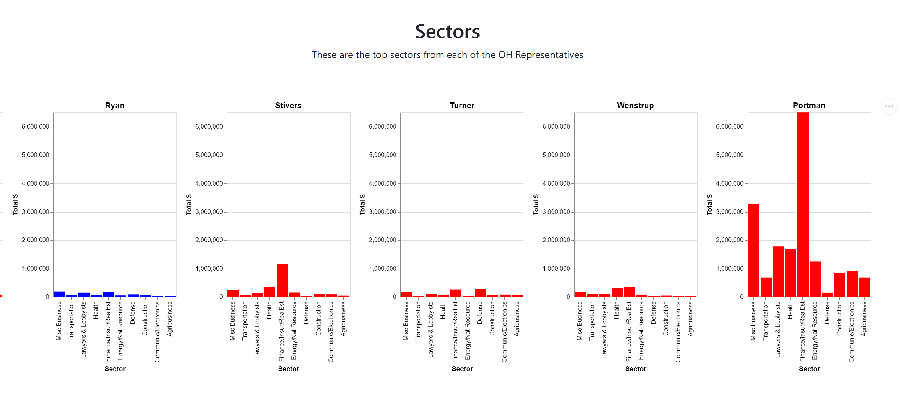